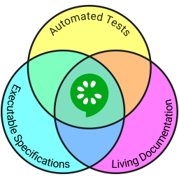
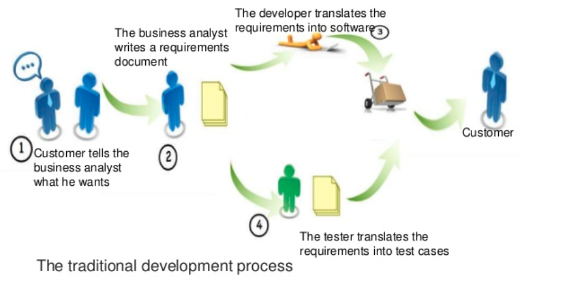
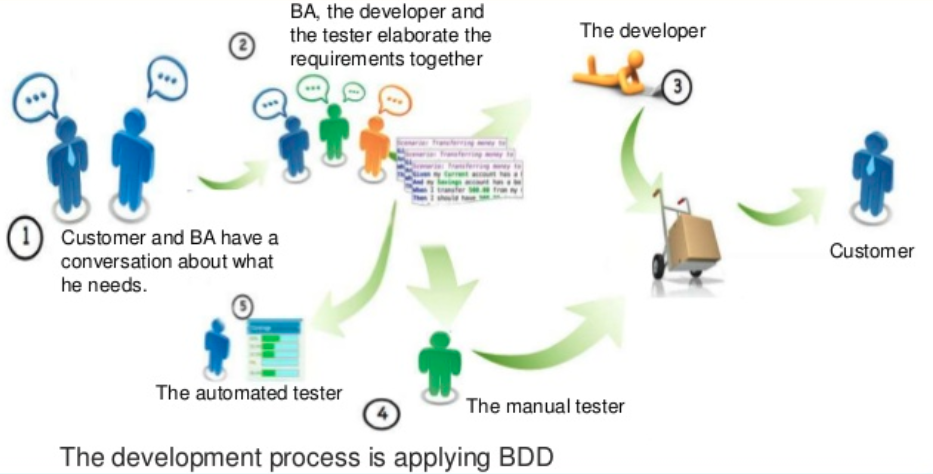
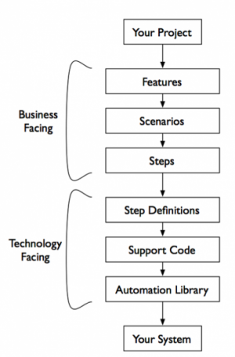
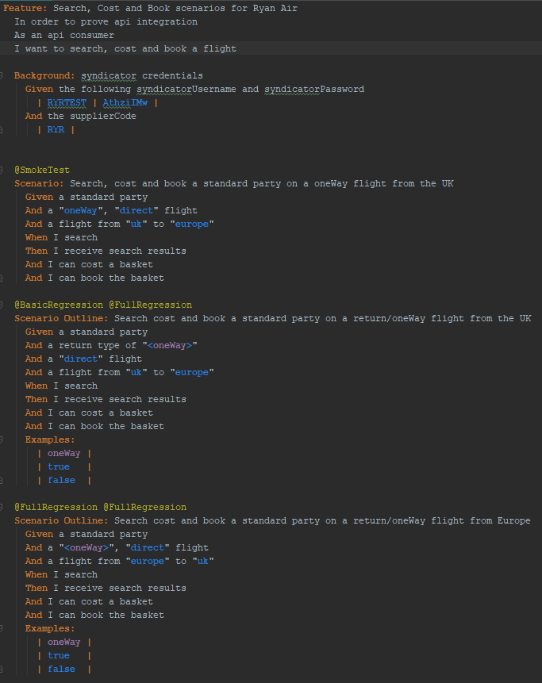
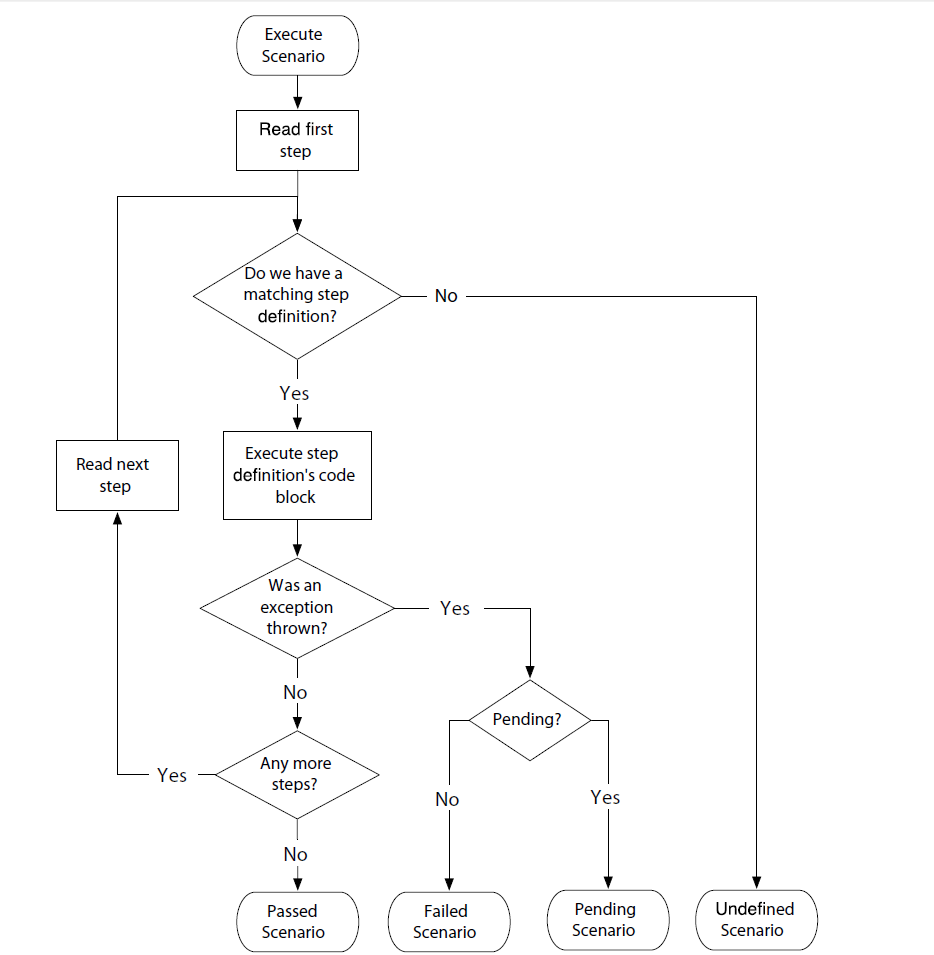
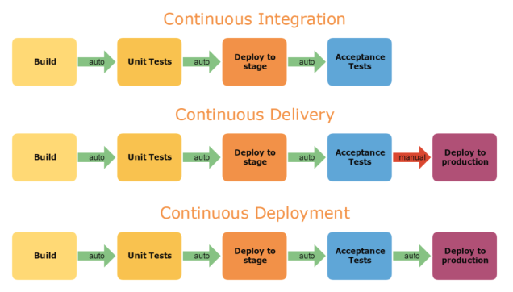

Why should we care about using BDD?
...because we're moving towards being a Product focused company that delivers what customers need. BDD forces an outside in development process that requires you to think of the customer first, build the right software and close gaps in understanding
In Test Driven Development (TDD), a developer writes a failing test - typically at a Unit or Integration test level. They then write the minimum viable code to make the test pass. The rationale is that lean software is developed that meets requirements
In BDD = TDD extended. PO's, BA's, Testers and Developers collaborate to describe the requirements as 'Behaviours'. These behaviours are written as Scenarios in a language called Gherkin:
Scenarios and Gherkin are, deliberately, non-technical languages that all business users can understand. The Testers *AND* Developers then convert Scenarios directly into tests, most commonly using the tool Cucumber.

Waterfall:

BDD:

To provide a language, a process, and a tool that would provide a single source of truth of software behavior for the audience of both non-technical and technical project members
In Cucumber
When you run Cucumber, it reads in your specifications from plain-language text files called features, examines them for scenarios to test, and runs the scenarios against your system.
Process representation:

Feature file within an IDE:


Problem:
Solution:
Live examples.......
GCP Jenkins Supplier Tests